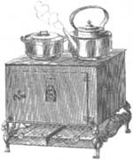
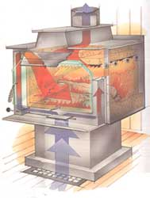
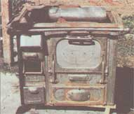
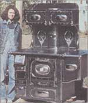

MOTHER'S HEARTH
After a little grousing, our resident curmudgeon finds something to deer about on the wood heating front
For some years now, this writer has made no secret of a personal distaste for the cozy relationship that exists among the lobbyist/lawyers for a few left-wing environmentalist groups, the fortune 500 makers of catalytic wood smoke combustors, and EPA and state bureaucrats who are ever eager to expand their turf by widening the impact of federal environmental legislation. In "friendly" lawsuits, this cabal exploited federal and state clean air laws into slapping fuel-efficiency and smoke-emissions limits on all new stoves sold in the U.S. - and did it so quickly that the fragmented wood-burning stove industry couldn't mount an organized resistance and the average wood-burning consumer never had a chance to comment.
The few U.S. wood stove makers that survived the end of the 70s wood heat boom elected to "join 'em, not fight 'em." They retooled and - overnight it seemed - began producing stoves equipped with catalytic smoke combustors and automated draft controls that made them boxy, wheezy, unresponsive, cold burning, and overpriced compared to the free-breathing predecessors. They did burn clean - but offered a significant benefit in only a handful of inversion-prone Rocky Mountain valleys like Vail, Colorado, and Missoula, Montana, or Pacific Coast smog basins burdened with such cities as Seattle, Los Angeles, and Portland. Though the offending smoke came from only a few yuppie ski resorts, upscale suburbs, and college towns where burning wood was more an exercise in political correctness than a heating necessity, the restrictions were applied wholesale and nationwide. The vast majority of American wood burners are country folks living in areas of normal airflow where smoke doesn't concentrate to noticeable - to say nothing of harmful - levels. They lack big-city incomes, burn wood to save money, and they suddenly had no choice in a new stove but a $1,500 catalytic.
There was, however, a quiet voice of reason somewhere in the regulation process. EPA restrictions were reserved only for the new "airtight" stoves - the ones that can be closed up and restrict airflow so that a fire smolders, producing the thick, acrid smoke that reputedly pitted paint on the ski condos in Vail and on professorial Volvos in Missoula. In the small print, the regulations exempted free-breathing (nonairtight) heating stoves, open-draft fireplaces, fireplace stoves, and cookstoves. Also, less restrictive emission standards were applied to noncatalytic airtight stoves - exemplified by the so-called high-techs that use an insulated firebox and sophisticated draft systems to burn cleanly without catalytic converters and robotic air controls.
Last year we reported on the popularity of older low-tech and no-tech stoves that escaped the government regulations, though they are still liable to restriction by local zoning boards, health commissions, and vigilante smog patrols. The old-timers can be bought and sold as used appliances, are reasonably priced, and lack the performance restrictions of the new models, so they retain their appeal for experienced country wood burners. Indeed, EPA or no, old-line U.S. and Canadian stove foundries never really stopped making traditional cooking ranges, 19th century-style log burners, and potbellies in several sizes. And after being quietly peddled while the application of the EPA regulations settled, the old designs (as well as copies from Taiwan) are once again appearing in hardware stores.
Last year (the 93/94 heating season) saw another joint exercise between government regulators and the new stove industry. In central New England, the newspapers began headlining a new "clean air program" being promoted by the government: inefficient and dirty-burning old wood stoves were worth a $200 trade-in toward a new EPA Phase-2 stove. A local reporter pinned down an extension service staffer as to where the idea and the rebate money originated. "Well, ah...from the stove shops?" was the sheepish reply. The government was "...umm, just encouraging retirement of old stoves. We all want cleaner air, you know." In other words, some enterprising stove peddlers managed to press enough flesh to convince the regulators to (what is the term ?)...shill for them. Or maybe it was the bureaucrats' idea. It doesn't much matter. Nothing illegal, but it leaves a bad taste in my mouth.
At last report, they were trying to extend the "program" to other regions of the country. Lotsa luck. To be fair, in everything but cost, the newest Phase-2 catalytics are a great improvement over the earliest models. And $200 is a nice discount off a $750 to $1,500 stove - even though you can find pre-EPA "toilets" (the trade name for Taiwan-made copies of popular domestic designs) for about $200 in the un-EPA-restricted used appliance market. I don't know an owner of a really fine quality, brightly enameled, 70s Scandinavian-built Jotul or Morso, Irish-made Waterford, or Vermont Castings Defiant who would consider trading in their excellent old iron for a piddling $200. As the owner of a 20-year-old Jotul Combi put it: "Hell, I wouldn't swap this stove even for money for a shiny new government stove and a year's supply of firewood, split and stacked in the cellar."
Unexpected Backfire
The EPA regulations have produced a backlash that confutes the very goals of clean air and efficient use of resources that the agency was commissioned to promote. Still yearning for the bright cheer and warmth of an open fire, much of the home buying/remodeling public has given up on stoves altogether and created a whole new demand for EPA-exempt open fireplaces and freestanding fireplace stoves. The manufacturers are quite logically responding to market forces and have come out with products that offer the open fire appeal that the EPA has regulated out of the catalytics. Actually, a fireplace produces more smoke and carbon dioxide and uses more wood than any stove, as they smoke unless tended carefully and extract little useful room heat from the fuel they use.
Check for yourself - it's hard to find a newspaper ad featuring wood stoves anymore. Ads are all for fireplaces, andirons, poker/shovel sets, and glass fire fronts. In my little Maine town, Edmund Perkins has just changed the sign in front of his shop from Ed's Wood Stoves to Ye Olde Fireplace Shoppe, as it was before the 1970 stove boom. He was once installing good heating Franklin fireplaces from the Portland Iron Foundry or big steel TimberLand stoves in vacation homes and TV room additions; he's now stocking up on steel firebox forms for conventional brick and concrete block fireplaces and those brightly painted, round fireplaces in "conversation pits" that send their smoke (and a lot of oil-heated room air) up a cone hanging from the ceiling. It is a shame and a step backward in energy conservation in my view.
Another environmentally negative development the EPA can take credit for is that natural gas - and bottled propane - burning stoves and gas logs have been rediscovered, and gas burners are being purchased by home owners who once would have elected to use a wood-burning stove.
In sum, the EPAs wood-emissions restrictions have increased the use of finite fossil fuel and discouraged use of self-renewing wood (as gas logs replace wood stoves). At the same time, they have decreased the heat efficiency of wood that is burned and increased smoke and carbon dioxide output (from the fuel-wasting, dirty-burning fireplaces that are being installed in place of stoves).
Who was it that said that government programs never do seem to accomplish what they set out to?
Several readers have asked where they can find literature on and parts for the newly made old-design iron. Cheap imports and low-tech, moderately priced stoves aren't being sold direct by mail as they were back in the 70s. The more elegant and more expensive modem parlor stoves of soapstone, enameled iron, and steel are available-see the ads in MOTHER. However, swinging-door Franklin fireplaces, little columnar railroad stoves, rotund laundry stoves, and even newly made ranges can be found in the back rooms of most country hardware stores and in the mail-order catalogs of Lehmans, Cumberland General Store, and other country living supply merchandisers that advertise in MOTHER.
But model-specific cast-iron parts for really old stoves and steel parts for the hundreds of 70s fly-by-night brands are hard to find. Except for stove bolts, parts weren't standardized; each stove and its parts were unique. Your best bet is to take a broken part to an iron or aluminum foundry or to make up your own wooden pattern for a missing part and see if a two-part sand mold can be made and a new part cast. I've known of whole doors, major body plates, and fire grates to be so reconstructed. Metal-working job shops can fabricate practically any part for a tin or steel stove, and can often make up a door, leg, lid, or even a whole fire grate for an iron stove.
An unornamented low-tech iron stove costs the same dollar per pound that it did years ago. The three-digit number you'll find cast into the top or rear of stoves made from original castings gives the weight (and price) for the base-model stove; that is, without nickel plate, isinglass in the door, or really fancy bas-relief in the castings. An unadorned one-room-heating potbelly, laundry stove, or log burner will cost about $200. Prices go up with size and ornamentation to a newly made kitchen range that costs about $2,500. A prime example of "artistry in iron" - a full-featured range or ornate parlor heater with crisp, smooth castings and nickel plate on footrests, aprons, finials, and feet - can cost $1,500 to $5,000.
Many people would like to gussy up stoves that lack ornamentation. Most old parlor stoves and cooking ranges came in several levels of dress. The "Standard" might be all black iron. The "Princess" might be made from the same base castings but might have extra ornamentation on the face of castings plus nickel plate on a skirt or footrests, or covering the finials on top, feet, or draft controls, or on the lacy little castings that are bolted to doors and bodies to hold on isinglass sheets. The "Magnificent Andes Parlor Brilliant" could be the same basic stove - but with ornamentation such as extra smoke-buming or draft-control inlets and isinglass portals in sides and doors, nickel plate over bas-relief all around, and also on fligreed doors, controls, skirts, pants, boots, and other items of stove fine dress.
You can dress up your old standard by judicious application of ornamentation. This is limited to nickel-plating parts that can be removed and sent to a plating shop. Normally the whole part is covered, though you can ask a plater if they can grease all of a door except for the bas-relief eagle on the front and apply the plate just to that. Or you might be able to clean the casting to bare iron, enamel-paint areas you don't want plated, and remove the paint after - ask the plating boss. Originally, if bas-relief areas of the stove body were plated, the shiny stuff was usually applied to a sheet metal appliqué that attached with small bolts or spring clips. You can make new appliques by fixing a sheet of lead- or copper-roof flashing over the relief and forming it by tapping with a small hammer and blunt metal stylus. To attach, drill small holes through the sheet and casting with a diamond bit and attach with small bolts (you may want to have bolt heads plated).
If your local silver and gold platers don't do nickel, they may know someone who does. For service by mail, look for platers' ads in the old car magazines. I can vouch for the work done by Vermont Plating (113 South Main Street, Rutland, VT 05701; 802-775-5759). Joe Shugrue and associates have done hundreds of old stoves and you can trust them to treat your pride and joy with care. They'll grind off rust if there is any, burnish, and plate any size piece in any stove metal you can get to them. Write or call first.
Please do not plate an old stove with silver or chrome; the former will tarnish and may melt, and the latter is too shiny - reminiscent of 50s autos. Nickel-plating will cost $20 and upper piece, $50 or more minimum per job. If that is too steep, fireproof silver paint made for charcoal grills does a fair job of approximating the soft burnish of nickel.
The News Isn't All Bad
That's the bad news; but there is some good news on the wood heating front.
First, if your home is equipped with a built-in brick and mortar fireplace, you are pretty much stuck with it. But fireplaces don't have to be air polluting and wood wasteful. By careful fire tending, perhaps changing the shape of the firebox, or using cast-iron fire backs, home owners can make existing fireplaces into relatively efficient heaters. You will find details in " Fireplaces That Can Heat Your Home ".
Also on the bright side, there have been steady improvements in noncatalytic, but still EPA-approved, stove designs - the high-techs that use an insulated firebox and engineered airflows to create a fire that is clean and fuel efficient but turns out the heat you expect from a stove that is fully "alive" and responsive. These stoves are smaller and more reasonably priced than the catalytics, as there is no converter, housing, or automated air control to restrict draft and make the stoves operate like robots.
Early high-tech designs were so tiny that they were barely able to heat a small room. But at least one manufacturer, Country Stoves (see page 98 for address), refused to follow the catalytic converter path and has worked to develop a line of more capable high-techs; their largest sports a firebox measuring more than three cubic feet. That's large enough to turn out the 70,000 BTUs per hour needed to heat a 3,500-square-foot home. By channeling exhaust through a superheated crucible of firebrick and ceramic fiber blanketing, then releasing fresh air into it through afterburners of stainless steel, holey tubing, the stoves burn smoke so thoroughly that their emissions are cleaner than those of many catalytics. Some models also have a built-in heat exchanger with a blower that will circulate heated air directly into living spaces; others feed into a central hot air heating system's plenum for distribution through conventional ducting.
These stoves are neither as simple nor as cheap as an old log burner - that's nothing but an iron box with a door at one end and a smoke hole at the other. But they are as understandable. They burn efficiently and cleanly because they burn hot. Their pyroclastic liner is based on the same insulating principle used for generations to maintain the high firebox temperatures needed to burn coal. The high-tech's sophisticated design isn't so much high technology as refined common sense (even if it was designed by computer); a portion of the stove's own draft is channeled through the firebed and another portion creates a kind of blowtorch to force in hot, high-velocity oxygen to burn smoke.
Wood-Burning Freedoms Preserved
Stove retailers I know are convinced that the other stove makers will follow in improving and expanding their own high-tech lines, and we're on the way to getting our wood-burning freedom back, folks. And isn't a sense of freedom what wood heat is all about? Country living can't totally free us from modern technology, the constraints of an interdependent society, and technological economy. But a big woodpile in back provides a sense of self-sufficiency through a very real measure of independence from Exxon and fossil heating fuels. It also offers a degree of independence from the public utilities and an end to the worry that the electricity might go out in a winter storm, making the oil or gas furnace go dead. When government first invited itself into the stove business, much of the feeling of independence and freedom seemed to disappear from wood heat. Somehow, it wasn't worth the sweat to chop and haul wood to feed an overpriced, underperforming, overmechanized stove all festooned with shiny tin plates full of "bureaucratese" affirming state and federal approval. It's kind of like when Mom, Dad, City Hall, and the preacher all approved of the cutoff Levis, ponytails, and weird-painted VW vans we flaunted in our youth - it spoiled the fun.
Now the newest high-tech stoves burn as cleanly and as economically as any older "government stove" - but without restrictive technology. They sell at reasonable prices and offer the wood burner all the warmth and responsiveness of the good old predecessors. Their performance isn't forced or artificial. They burn smartly - and as naturally as the wood they use. You can even snake a cleaning brush all the way through them, from door to firebox to smoke boot and into the stovepipe - just like any old-time wood burner. That gets Big Brother out of the living room and puts the good feeling back into wood heat ...at least for me.
|
 A sow's ear? Absolutely, but |
 ... discover what some jazzing up can do. |
 |
|
 |
|
|